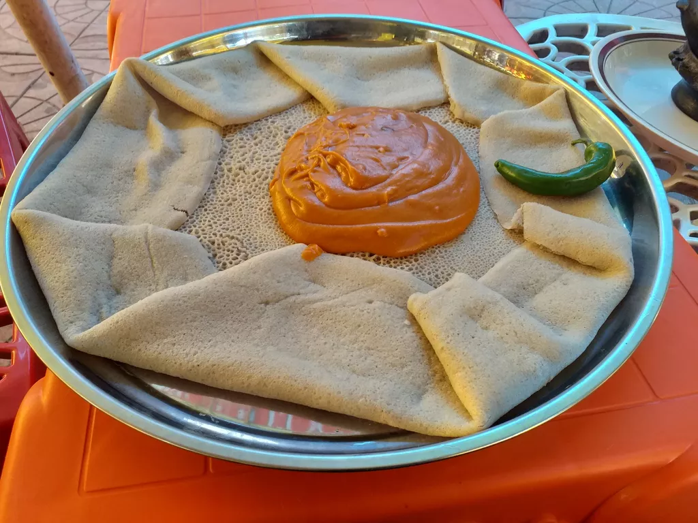

Shiro Recipe

Description
Shiro is staple in Ethiopian cuisine, which is easy to make, healthy, and delicious
Often served alongside other dishes, also leveraging injera as the base, it makes more a great compliment in many platters
Although, in a platter Shiro tends to blend into the background, it's common to enjoy Shiro by itself, given how relatively easy it is to make
Ingredients
Shiro Powder
- 3/4 cup chickpea flour
- 1 tablespoon berbere powder
- 1 teaspoon ground cardamom, optional
- 1 teaspoon cumin powder
- 1 teaspoon garlic powder
- Salt to taste
Shiro Wat
- The shiro powder (from above)
- 1 onion, large, diced
- 1/3 cup olive oil
- 1 teaspoon minced garlic
- 1 tablespoon tomato paste
Steps
Shiro Powder
- On a large skillet, dry roast ¾ cup of chickpea flour along with a tablespoon of berbere spice, and 1 teaspoon each of ground cardamom, white cumin powder, and garlic powder.
- Once dried, and no longer steaming, set aside. You can add the salt now or wait until later.
Shiro Wat
- In a medium sized pot or Dutch oven, heat ⅓ cup of olive oil on low to medium heat. Add 1 diced onion over low to medium heat for a few minutes. This is just to get the aromatics fragrant so 1-2 minutes is sufficient, don't let it brown!
- Next, add a teaspoon of minced garlic along with the tomato paste and sauté for 30 seconds until the garlic is fragrant.
- Now, add the shiro powder, along with salt and 3 cups of water, and bring to a boil on medium heat. Then, turn down the heat to a low to medium, and let it simmer for about 20 to 30 minutes to allow the mixture to thicken to your desired consistency. Stir at 5 minute increments to ensure it doesn't stick. The oil will float to the top when the shiro is done cooking! Taste and adjust salt and serve hot with rice or injera!